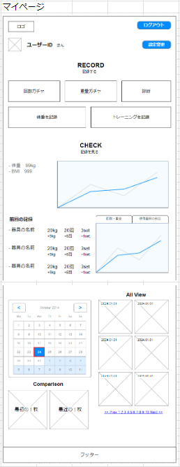
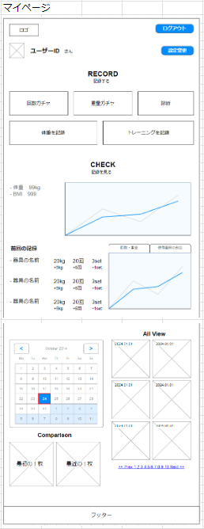

Erina.com
Erina.comWork
Work
本Webシステムは、トレーニング内容を記録し利用者の運動習慣、モチベーションアップのサポートをします。
バックエンド
フロントエンド
コード管理
 

WBSとガントチャートにより進捗管理をした
ペーパープロトタイプを作成し、各画面の動きや流れを整理した
利用者のペルソナを設定しゴールを明確化、UI/UX設計をすることでシステム全体の整合性が取れるようにした
各メンバーそれぞれのController、HTMLで制作を進め、最終的に結合を行った
userIdとdateを紐づけて取得する際にMap<>ではなくList<>とif文を使用することによってアルバム表示を行った。
List<>データを取得後、List
リスト型のクラスを入れ子にして渡す（Java）
入れ子になったデータをインデックス指定で受け取る（JavaScript）
各機能の詳細設計が甘く、製作途中で機能の追加や変更が多々あったため、その都度軌道修正した。
もっと内容を詰めるべきだった。
進捗管理はWBSとガントチャートにそれぞれ記入してもらうことで管理できると考えていたが、
実際は更新が後回しになっていることが多々あった。
ツールだけに頼るのではなく、一人一人に確認した上でツール活用することが大事だと感じた。
優先度は機能のみで考えていたが、機能・画面・コントローラーの3つの観点で考え、
最初に認識のすり合わせをすべきだった。
優先順位の高い機能の実装が遅れたことにより、他の実装が待ち状態になってしまったため、
スケジュール全体が1週間押してしまった。